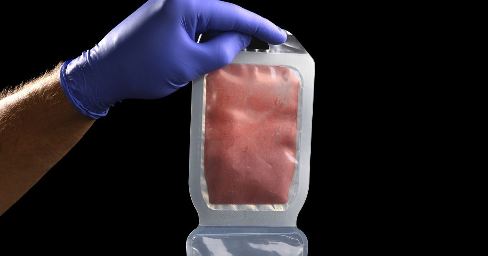

Скачать: фальшивая кровь и будущее батареек
Это сегодняшнее издание The Download, нашего ежедневного информационного бюллетеня, в котором представлена ежедневная доза того, что происходит в мире технологий.
Гонка американских военных за изготовление фальшивой крови В феврале 2007 года в Ираке был сбит военный вертолет США, перевозивший кровь в полевой госпиталь, в результате чего погибли все семь членов экипажа.